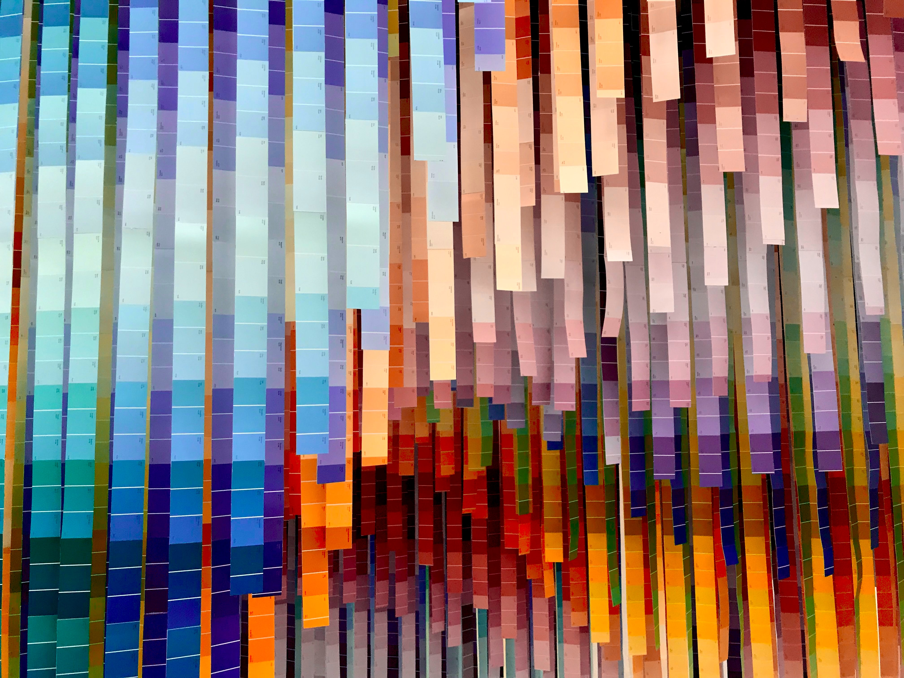

Design Challenge
What needs to be accomplished with this web redesign? How do we go about this?
Defining the design challenge was the first part of the web redesign process. I used the IDEO Human Centered Design Toolkit to determine what needs to be improved to make the site better for the user.